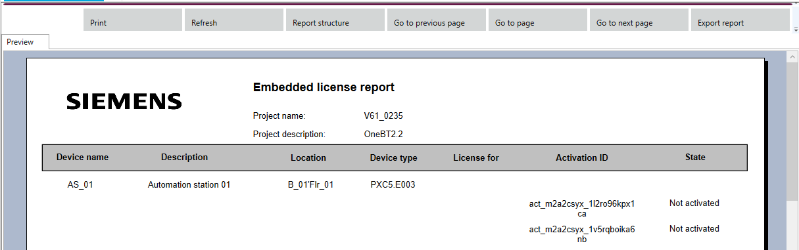

Creating a licensing report
The embedded licensing report provides details on devices with available embedded licenses in the project. This report includes information about the devices, their embedded licenses, and specific properties as required for analysis.
Available report types
Embedded licensing report is a list of devices with available embedded licenses, including multiple licenses per device if applicable.
Report features
- Devices with embedded licenses: Only devices that have embedded licenses available will be included in the report.
- Multiple licenses per device: If a device has multiple licenses, all licenses will be listed.
- Properties: The report will display the required properties according to the user interface.
- Device selection: The report can be generated for a single device or a selection of devices.
- Project engineer: The report will be based on the selected devices and their licenses.
Creating the report
- Go to Building > Building structure.
- Select a single device or multiple devices for the report.
- Right-click the selected devices and choose Reports.
- Select Embedded licensing report.
- Click OK.
- The report will open in the Reports task, displaying all devices with embedded licenses and their corresponding properties.
